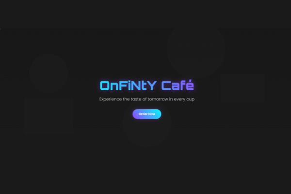

OnFiNtY Café Landing Page
An immersive, futuristic-themed landing page for a café, featuring interactive neon visuals, a mouse-tracking glow effect, and slick animations.
Project Overview
Cyberpunk Aesthetics
A dark, moody design brought to life with glowing neon text, gradient buttons, and the futuristic 'Orbitron' font for a unique sci-fi café vibe.
Interactive Experience
Engages users with a unique mouse-tracking glow effect and satisfying hover animations on all interactive elements, making the site feel alive.
Seamlessly Responsive
Delivers a perfect experience on any device. The responsive grid and mobile-first approach ensure the menu and content look great everywhere.
Key Features

Full-Height Hero with Animated Gradient Text
100vh hero section with centered content, Orbitron 900 font-weight title with 45deg gradient animation cycling between purple and cyan, plus geometric SVG background overlay.
.png)
Glassmorphism Cards with Neon Borders
Menu cards with rgba(255,255,255,0.05) backgrounds, 10px backdrop-filter blur, animated purple border glow on hover, and 30px border-radius with smooth transitions.
.png)
Gradient Glow Buttons with Scale Effects
30px border-radius buttons with 45deg purple-to-cyan gradients, box-shadow glow effects, scale(1.05) hover transforms, and smooth 0.3s ease transitions.
.png)
Animated Border Contact Section
Contact section with animated gradient border using ::before pseudo-element, 200% background-size with position animation, and 30px border-radius styling.
Technical Implementation
JavaScript Mouse Tracking
The interactive glow effect is powered by a JS event listener that tracks the mouse's X/Y coordinates and updates the glow's position in real-time.
CSS `backdrop-filter`
The menu cards use `backdrop-filter: blur()` to create a modern 'glassmorphism' effect, making them look like frosted glass over the background.
Staggered Transitions (JS+CSS)
JavaScript dynamically adds a CSS `transition-delay` to each menu card, creating a beautiful cascade animation as they appear on scroll.
Performant Scroll Animations
The Intersection Observer API is used to trigger animations only when elements scroll into view, ensuring a smooth experience without lag.
Advanced Pseudo-elements
The animated gradient border on the contact section is a clever trick using a `::before` pseudo-element with an animated `background-position`.
Responsive CSS Grid
The menu is built on a flexible CSS Grid with `auto-fit` and `minmax`, allowing it to adapt perfectly to any screen width without complex media queries.
Design & Development Details
Color Scheme: A stylish dark theme (#1E1E1E) with vibrant neon accents of
purple (#9543FF) and cyan (#00FFFF).
Layout: A modern single-page layout using CSS Grid for responsive content
blocks.
Animations: A rich blend of JS-driven interactions (mouse glow), performant
scroll animations, and continuous CSS keyframe animations.
Skills Demonstrated: Advanced CSS & JavaScript Animation, UI/UX Design,
Interactive Web Elements, Responsive Design, CSS Grid.
Time taken to build: A highly stylized and interactive page like this would
take around 18-22 hours.
Pricing: For this level of custom work and interactivity, my personal pricing
would be in the $150 - $280 range.